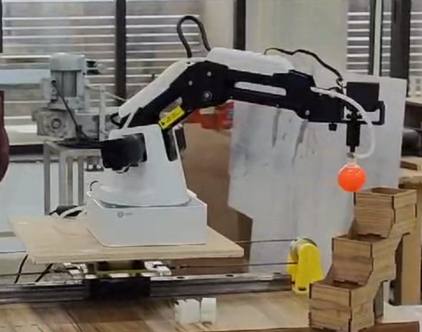
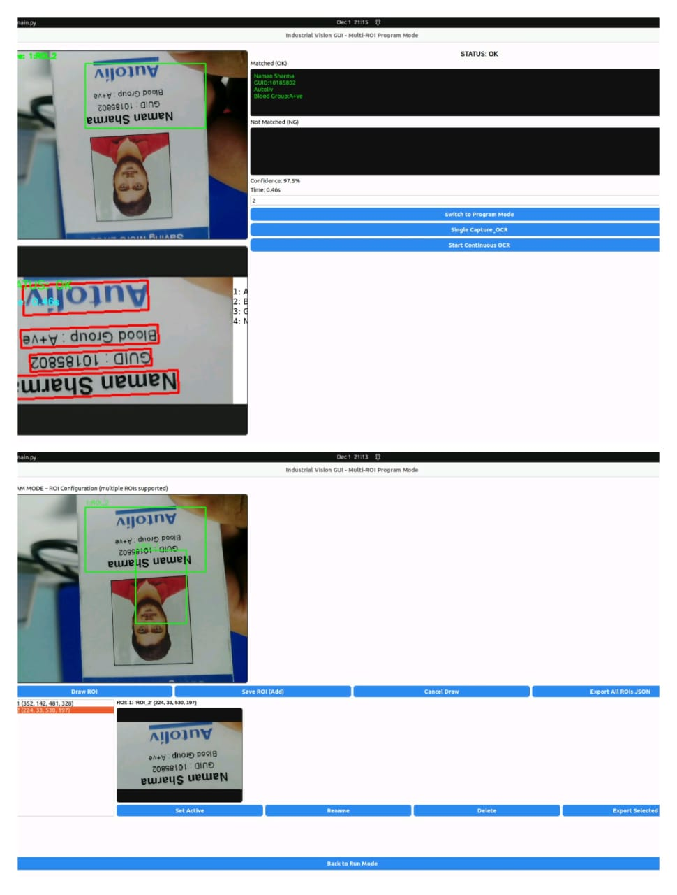
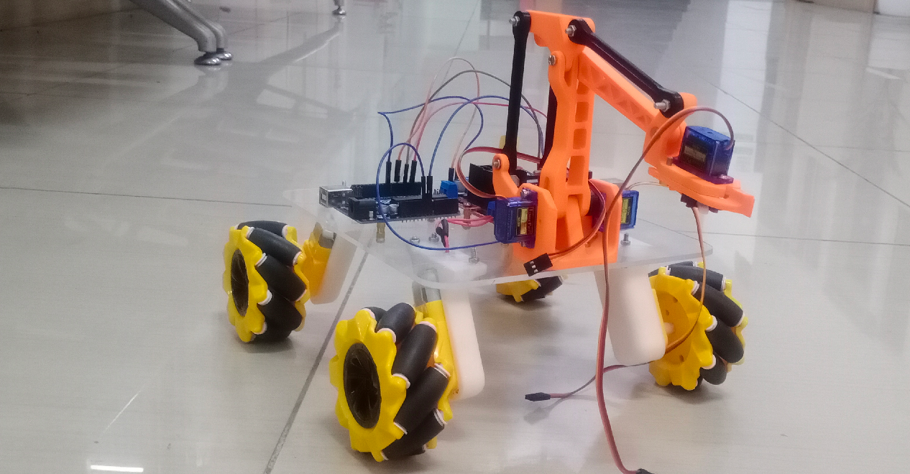
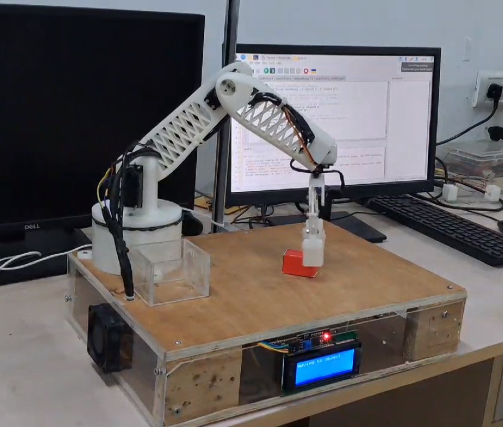

I build systems where hardware meets software — from vision-guided robot arms and omnidirectional mobile platforms to industrial OCR inspection on edge hardware. ROS2 · Computer Vision · Jetson Orin Nano.
Real hardware. Real constraints. Built from scratch.
Autonomous pick-and-place system using a Dobot Magician arm with a full computer vision pipeline. Separated vision processing and robot control into clean ROS2 nodes — enabling independent debugging and real robot deployment beyond simulation.

dobot_arm.jpg
ocr_inspection.jpgOffline OCR inspection pipeline on Jetson Orin Nano. Designed to understand how text detection and recognition behave under real factory conditions — glare, inconsistent positioning, timing constraints.

mecanum_robot.pngHolonomic mobile robot using Mecanum wheels — capable of full omnidirectional motion without chassis rotation. Built as a research platform for SLAM and autonomous navigation integration.
Designed, 3D-printed, and assembled a multi-DOF robotic arm from scratch. Focused on the full hardware-software integration loop — mechanical design, servo calibration, and motion sequencing — to understand real-world actuation challenges that simulation doesn't reveal.

robotic_arm.pngI'm a Mechatronics Engineering graduate focused on building systems at the intersection of computer vision, robotics, and embedded hardware. My interest isn't just in algorithms that work in simulation — it's in systems that work in the messy, constrained, real world.
During my internship at Autoliv India, I got direct exposure to industrial manufacturing environments — TPM, production systems, defect detection, and the stark gap between what factory floors need and what current automation delivers. That gap is what drives my work.
I've built a vision-guided robot arm deployed on real hardware, an OCR inspection system on Jetson Orin Nano, an omnidirectional Mecanum platform, and a custom 3D-printed robotic arm. Every project was about understanding what breaks and why — not just making demos.
I'm now actively seeking my first full-time role in Robotics, Computer Vision, Automation, or Embedded AI — anywhere globally. I bring strong fundamentals, real hardware experience, and a bias toward building systems that are reliable, not just impressive.
I'm actively looking for my first full-time role in robotics, computer vision, or autonomous systems. If you're building something ambitious — let's talk.